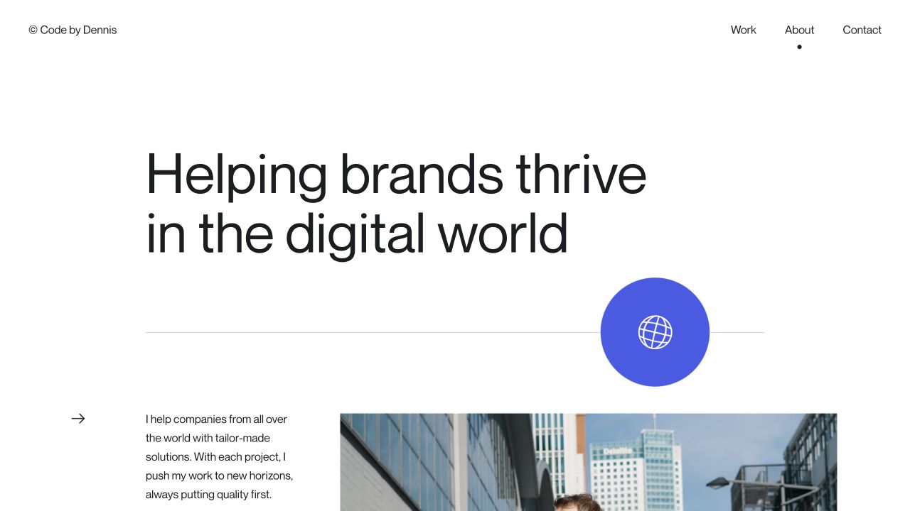
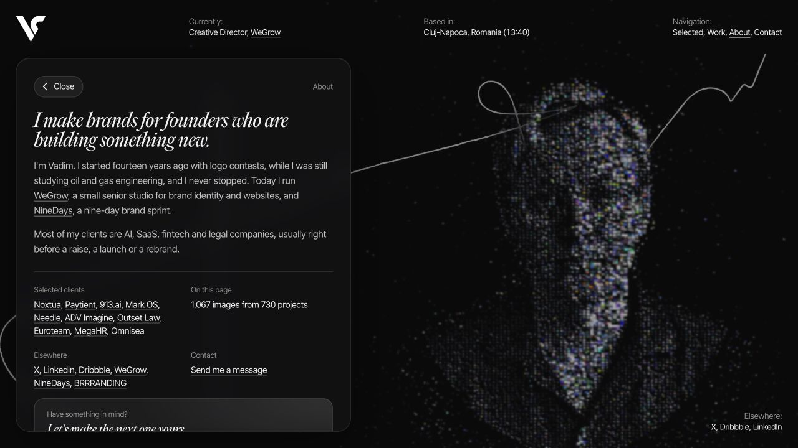
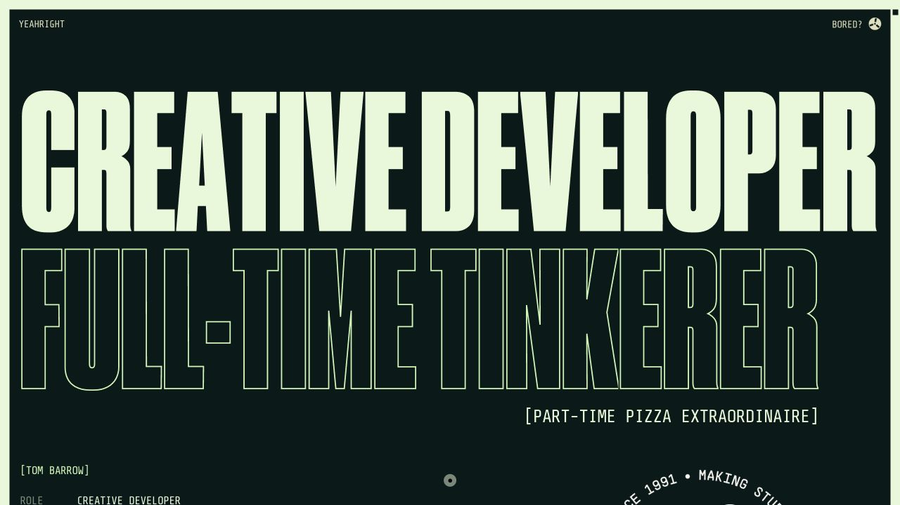
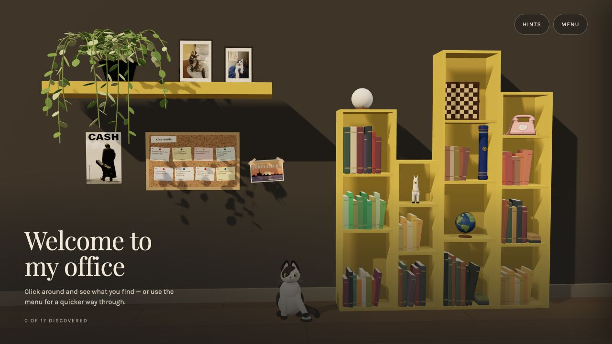
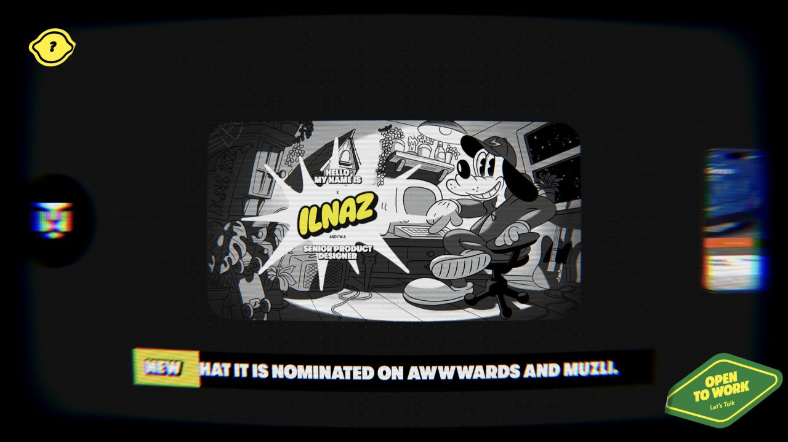

Dennis Snellenberg
人物大图 · 克制留白

以一句大标题建立个人定位，再用不对称的文字与人物照片介绍自己，向下展开能力与经历。
- 交互方式
- 页面切换、图片视差、圆形交互元素。
- 用于你的页面
- 适合把你的彩色肖像、设计立场与 CV 分开讲清楚；履历保留完整，阅读更轻。
五个实际设计师网站，五种不同的个人叙事方式。先看原站，再回复 P01—P05；也可以组合，例如「P01 的照片布局 + P02 的字体」。选定后，再按你的 CV 和原始彩色照片重做个人介绍页。

以一句大标题建立个人定位，再用不对称的文字与人物照片介绍自己，向下展开能力与经历。

黑色背景中的独立信息面板，用衬线标题、细线分栏和简短正文组织个人背景。

用超大窄体字、描边字与紧凑的小型个人资料，形成有个性的视觉开场。

把真实办公室转化成可探索的个人空间，书籍、地球仪和电话分别承载不同内容。

把个人介绍与作品做成电视内容，以屏幕、信号质感与频道切换建立独特身份。
截图来自实际网站；版式与交互为本次参考重点。原站当前配色不限定最终方案，你的网站可继续使用黑白灰与彩色个人照片。你的个人页内容尚未替换。